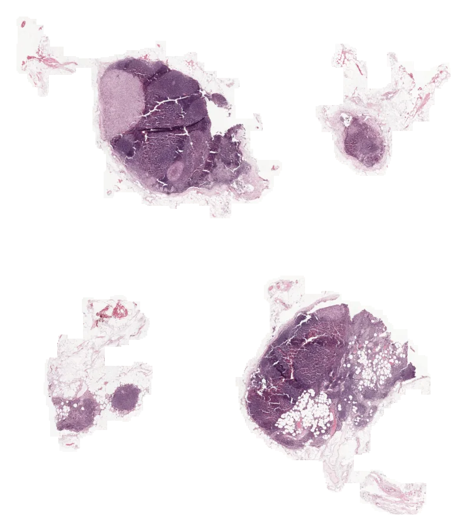
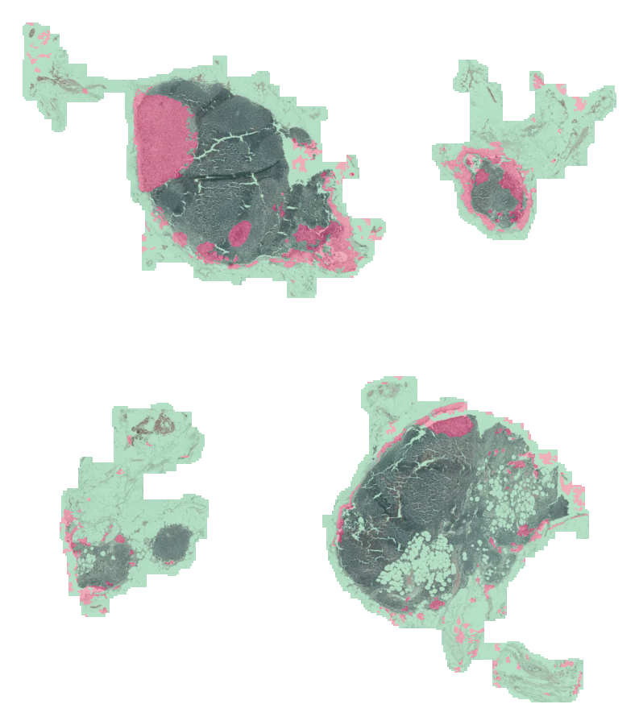
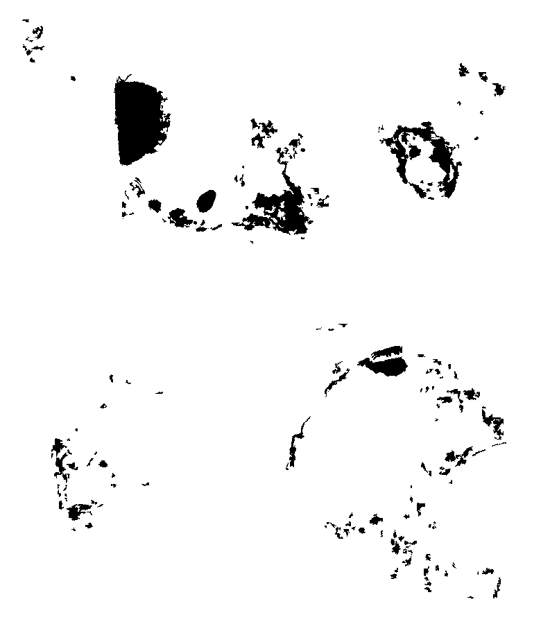
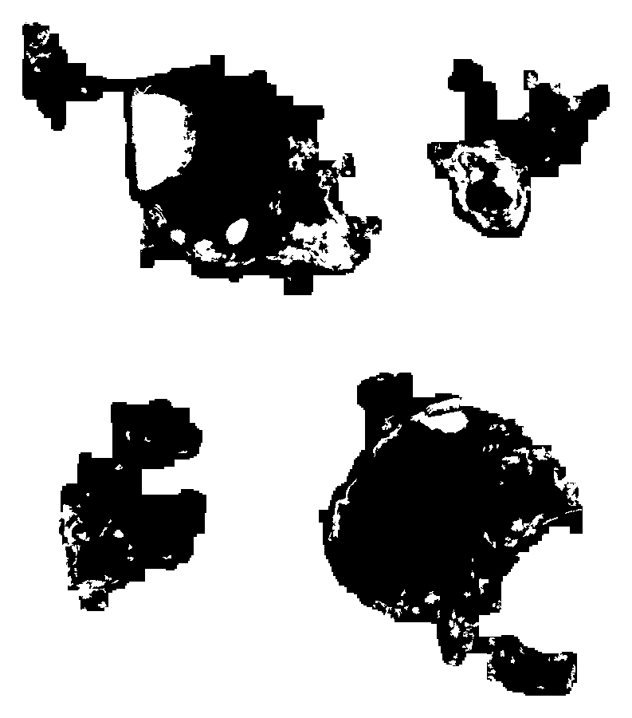

Binary agreement on reviewed tissue
Metrics use 2,463,375 official known pixels within the shared H&E tissue mask. The mask excludes 1,664,968 official known pixels, including 0 annotated metastatic pixels. The official annotation was already visible when this rerun began.
| Measure | Final mask | Before contour cleanup |
|---|---|---|
| Metastasis recall | 87.3% | 86.5% |
| Metastasis IoU | 33.5% | 31.3% |
| Balanced accuracy | 89.3% | 88.5% |
| False-positive tissue, mm² | 3.255312 | 3.577008 |
Positive slide call. The final mask qualifies as positive when a positive component reaches 0.01 mm².
Tissue and Bora prediction


Black-and-white class masks


White marks the selected class. The mask uses 6 µm contour smoothing and 2,000 µm² component cleanup.
Downloads
Bora GeoJSON · Audited score data
U-Net, DeepLabV3+, MedSAM and VISTA-PATH are pending under the revised protocol.